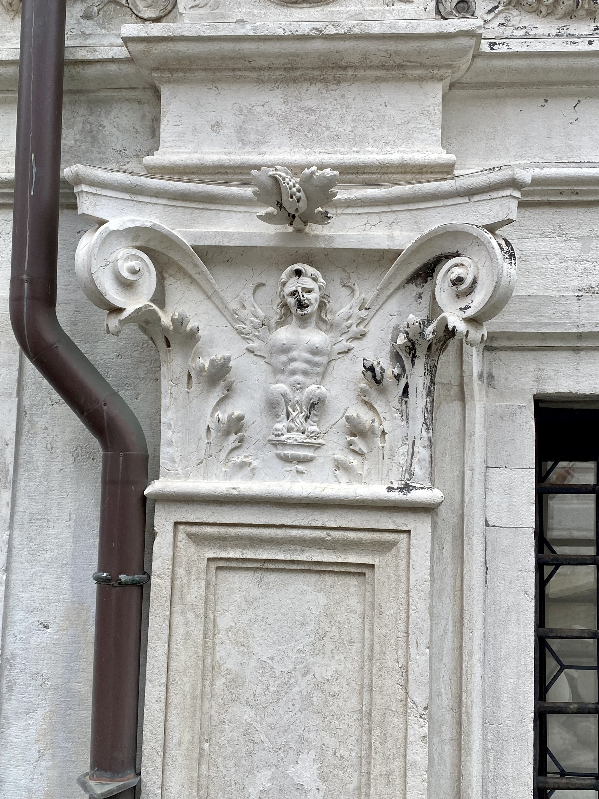

Centuries ago, the Rialto Bridge was made of wood, and on several occasions, the idea of a stone bridge had been considered.

The decision divided the people, and among the most ardent unbelievers, convinced that it was impossible to build it in stone, there were two old people, a man and a woman.
In a tavern near Rialto, during a heated discussion, the old man exclaimed: "If the bridge is built, may a nail grow between my thighs!" And the old woman: "And may my cunt burn!"

The bet made the rounds of the city, so much so that once the bridge was completed, at Palazzo dei Camerlenghi, two capitals were carved into the pillars depicting the two protagonists of the bet, as a warning to unbelievers about the abilities of man.